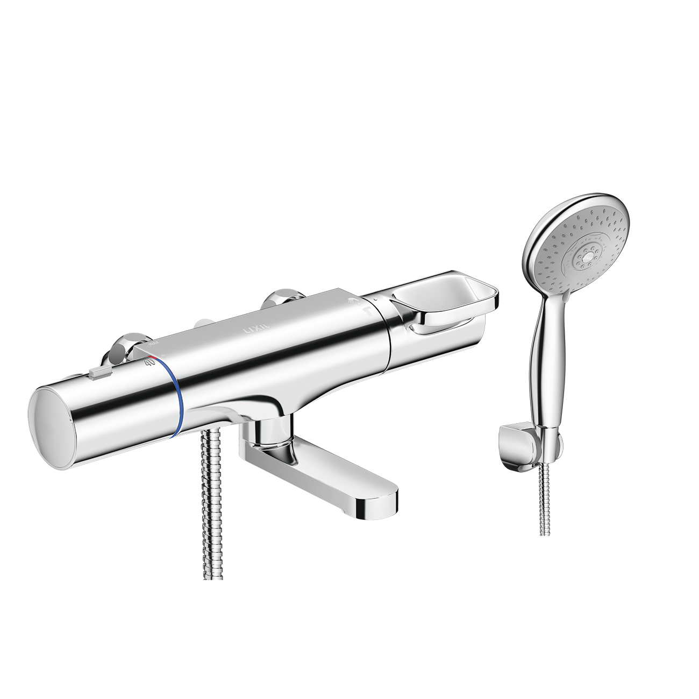
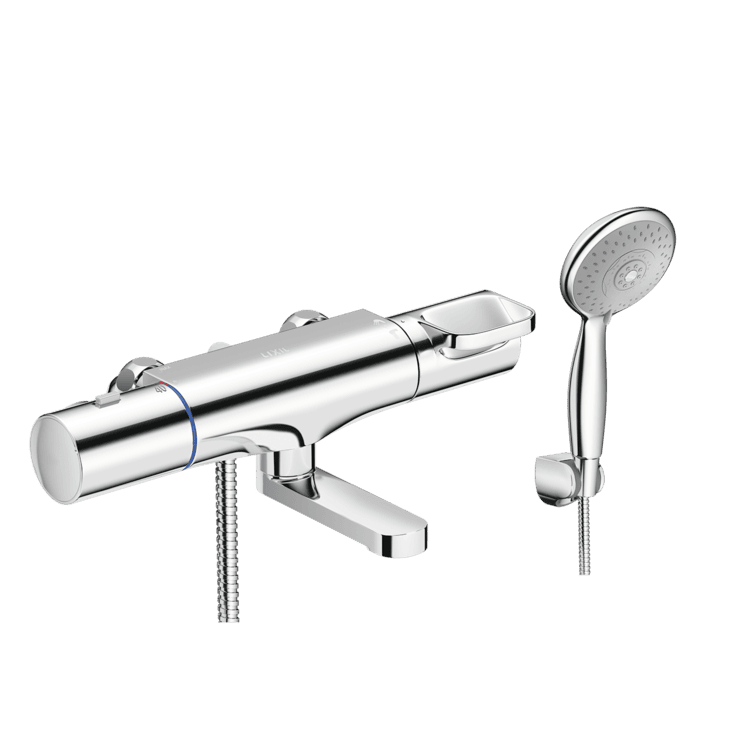
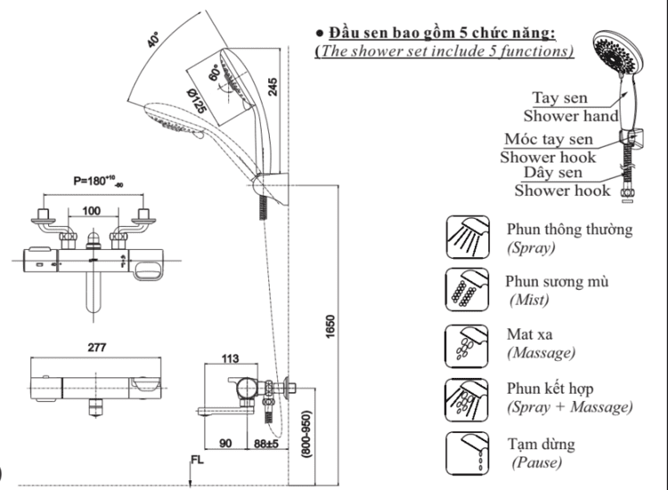

Sen tắm nhiệt độ BFV-7145T-3C là thiết bị vệ sinh INAX được thiết kế mang lại sự tiện nghi, an toàn tuyệt đối và vẻ đẹp hiện đại cho mọi không gian phòng tắm. Với công nghệ kiểm soát nhiệt độ tiên tiến, sản phẩm là lựa chọn hoàn hảo cho các gia đình ưu tiên sự an toàn và trải nghiệm thư giãn cá nhân hóa.Trải nghiệm tắm cá nhân hóa với tay sen 3C5 chế độ phun đa dạng: Tay sen 3C đi kèm cho phép tùy chỉnh trải nghiệm tắm phong phú như chế độ phun mát-xa giúp thư giãn sau ngày làm việc, phun sương hỗ trợ tẩy trang nhẹ nhàng, và chế độ phun mưa cho nhu cầu tắm thông thường.Bát sen phun đều: Thiết kế bát sen tắm đặc biệt đảm bảo dòng nước được phân bổ đều khắp, mang lại cảm giác sảng khoái tối đa.Lưu lượng ổn định: Sen tắm nhiệt độ BFV-7145T-3C hoạt động hiệu quả trong dải áp lực nước 0.1MPa - 0.75MPa, đảm bảo dòng chảy luôn mạnh mẽ.Công nghệ trộn nhiệt tự động và an toàn tối ưuChống bỏng thông minh: Sen tắm nhiệt độ BFV-7145T-3C tích hợp công nghệ trộn nhiệt tự động, giúp duy trì mức nhiệt ổn định ở 38°C và đảm bảo nước không bao giờ vượt quá 49°C.Bảo vệ trẻ nhỏ: Tốc độ điều chỉnh nước nhanh chóng và tính năng chống bỏng giúp cha mẹ hoàn toàn yên tâm khi sử dụng cho gia đình có trẻ nhỏ.Vận hành trơn tru: Thiết kế tay vặn vòi cho phép người dùng điều chỉnh nước dễ dàng, tiện lợi và tiết kiệm tài nguyên nước hiệu quả.Chất lượng Nhật Bản và độ bền vượt trộiChất liệu đồng cao cấp: Thân sen BFV-7145T-3C được đúc từ đồng nguyên chất với hàm lượng chì thấp, đảm bảo an toàn cho sức khỏe và độ bền kết cấu vững vàng.Lớp mạ Crom/Niken: Bề mặt sản phẩm được bảo vệ bởi lớp mạ Niken - Crom sáng bóng theo tiêu chuẩn chất lượng Nhật Bản, giúp chống ăn mòn và giữ vẻ đẹp thẩm mỹ lâu dài.Lõi van bền bỉ: Thiết kế với đĩa Cartridge chất lượng cao giúp kiểm soát nước chính xác, ngăn rò rỉ và tăng tuổi thọ sử dụng..Xem thêm về cách sử dụng vòi sen nóng lạnh INAXVideo giới thiệu sen tắm INAXBản vẽ sen tắm nhiệt độ BFV-7145T-3CChi tiết cách lắp đặt sen tắm nhiệt độ BFV-7145T-3C.Thông số kỹ thuậtChất liệuĐồng mạ Crom/NikenLoạiSen tắm nhiệt độKích thước-Thiết kếTay sen 3C 5 chế độ phunThương hiệuINAXTính năng- Trộn nhiệt tự động, chống bỏng 38°C - Đĩa Cartridge bền bỉ, tiết kiệm nước - Thiết kế ít chì, an toàn cho trẻ nhỏÁp lực nước0.10 MPa - 0.75 MPaKhác- Hotline tư vấn và bảo hành: 18006633
Sen tắm nhiệt độ BFV-7145T-3C
Vòi chậu thương hiệu INAX.
Đã cập nhật danh sách yêu thích.
DANH MỤC: Vòi chậu
MÃ SẢN PHẨM: BFV-7145T-3C
DEPTH: mm
HEIGHT: mm
WIDTH: mm
Sen tắm nhiệt độ BFV-7145T-3C là thiết bị vệ sinh INAX được thiết kế mang lại sự tiện nghi, an toàn tuyệt đối và vẻ đẹp hiện đại cho mọi không gian phòng tắm. Với công nghệ kiểm soát nhiệt độ tiên tiến, sản phẩm là lựa chọn hoàn hảo cho các gia đình ưu tiên sự an toàn và trải nghiệm thư giãn cá nhân hóa.Trải nghiệm tắm cá nhân hóa với tay sen 3C5 chế độ phun đa dạng: Tay sen 3C đi kèm cho phép tùy chỉnh trải nghiệm tắm phong phú như chế độ phun mát-xa giúp thư giãn sau ngày làm việc, phun sương hỗ trợ tẩy trang nhẹ nhàng, và chế độ phun mưa cho nhu cầu tắm thông thường.Bát sen phun đều: Thiết kế bát sen tắm đặc biệt đảm bảo dòng nước được phân bổ đều khắp, mang lại cảm giác sảng khoái tối đa.Lưu lượng ổn định: Sen tắm nhiệt độ BFV-7145T-3C hoạt động hiệu quả trong dải áp lực nước 0.1MPa - 0.75MPa, đảm bảo dòng chảy luôn mạnh mẽ.Công nghệ trộn nhiệt tự động và an toàn tối ưuChống bỏng thông minh: Sen tắm nhiệt độ BFV-7145T-3C tích hợp công nghệ trộn nhiệt tự động, giúp duy trì mức nhiệt ổn định ở 38°C và đảm bảo nước không bao giờ vượt quá 49°C.Bảo vệ trẻ nhỏ: Tốc độ điều chỉnh nước nhanh chóng và tính năng chống bỏng giúp cha mẹ hoàn toàn yên tâm khi sử dụng cho gia đình có trẻ nhỏ.Vận hành trơn tru: Thiết kế tay vặn vòi cho phép người dùng điều chỉnh nước dễ dàng, tiện lợi và tiết kiệm tài nguyên nước hiệu quả.Chất lượng Nhật Bản và độ bền vượt trộiChất liệu đồng cao cấp: Thân sen BFV-7145T-3C được đúc từ đồng nguyên chất với hàm lượng chì thấp, đảm bảo an toàn cho sức khỏe và độ bền kết cấu vững vàng.Lớp mạ Crom/Niken: Bề mặt sản phẩm được bảo vệ bởi lớp mạ Niken - Crom sáng bóng theo tiêu chuẩn chất lượng Nhật Bản, giúp chống ăn mòn và giữ vẻ đẹp thẩm mỹ lâu dài.Lõi van bền bỉ: Thiết kế với đĩa Cartridge chất lượng cao giúp kiểm soát nước chính xác, ngăn rò rỉ và tăng tuổi thọ sử dụng..Xem thêm về cách sử dụng vòi sen nóng lạnh INAXVideo giới thiệu sen tắm INAXBản vẽ sen tắm nhiệt độ BFV-7145T-3CChi tiết cách lắp đặt sen tắm nhiệt độ BFV-7145T-3C.Thông số kỹ thuậtChất liệuĐồng mạ Crom/NikenLoạiSen tắm nhiệt độKích thước-Thiết kếTay sen 3C 5 chế độ phunThương hiệuINAXTính năng- Trộn nhiệt tự động, chống bỏng 38°C - Đĩa Cartridge bền bỉ, tiết kiệm nước - Thiết kế ít chì, an toàn cho trẻ nhỏÁp lực nước0.10 MPa - 0.75 MPaKhác- Hotline tư vấn và bảo hành: 18006633
DANH MỤC: Vòi chậu
MÃ SẢN PHẨM: BFV-7145T-3C
DEPTH: mm
HEIGHT: mm
WIDTH: mm